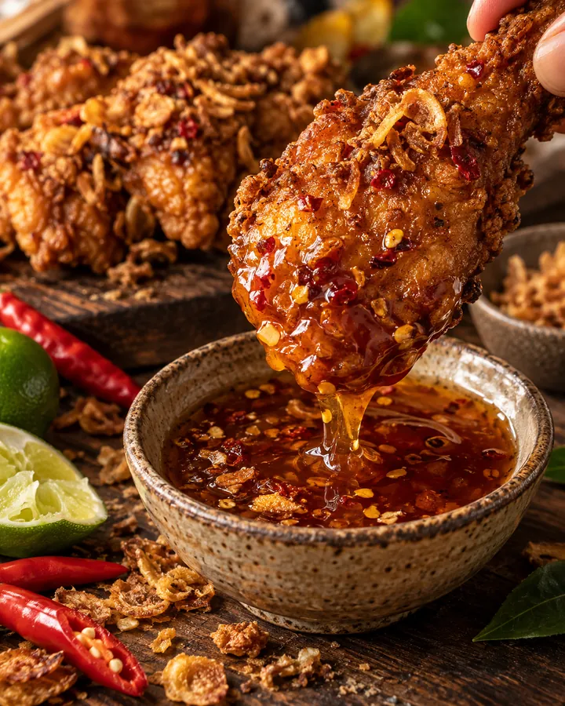
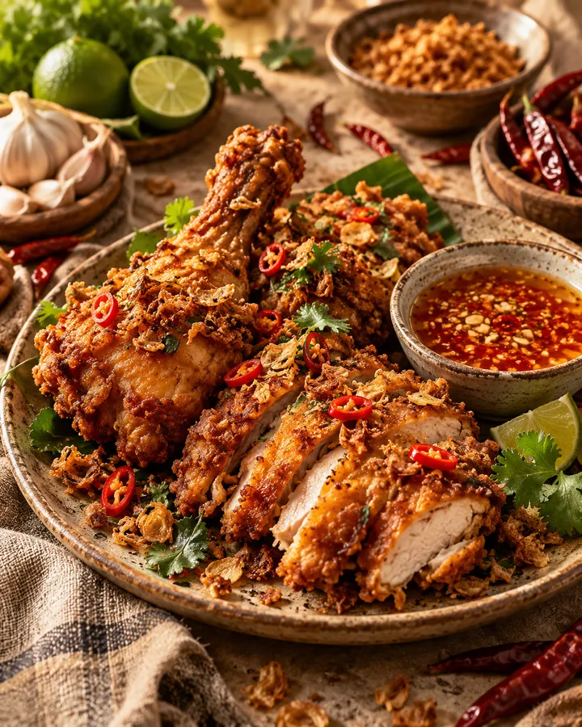
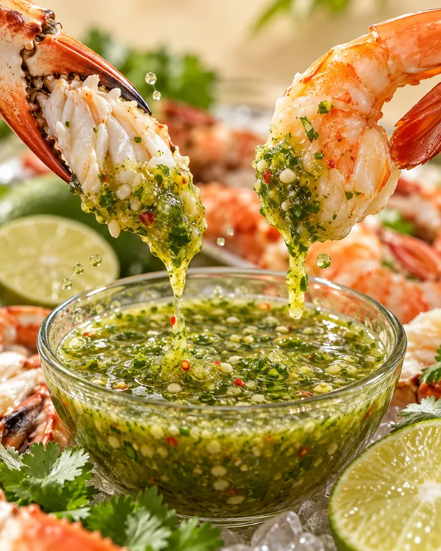
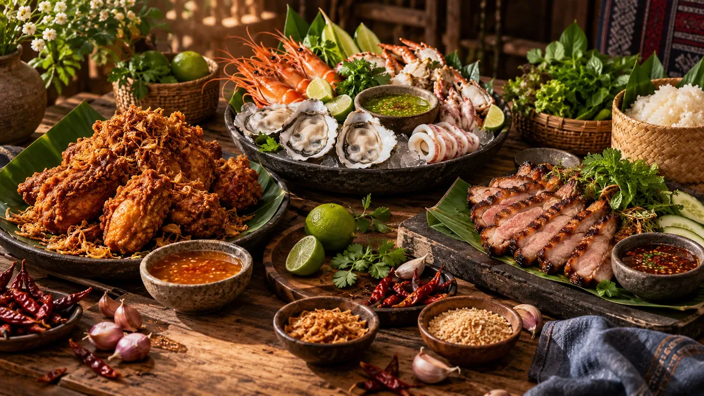
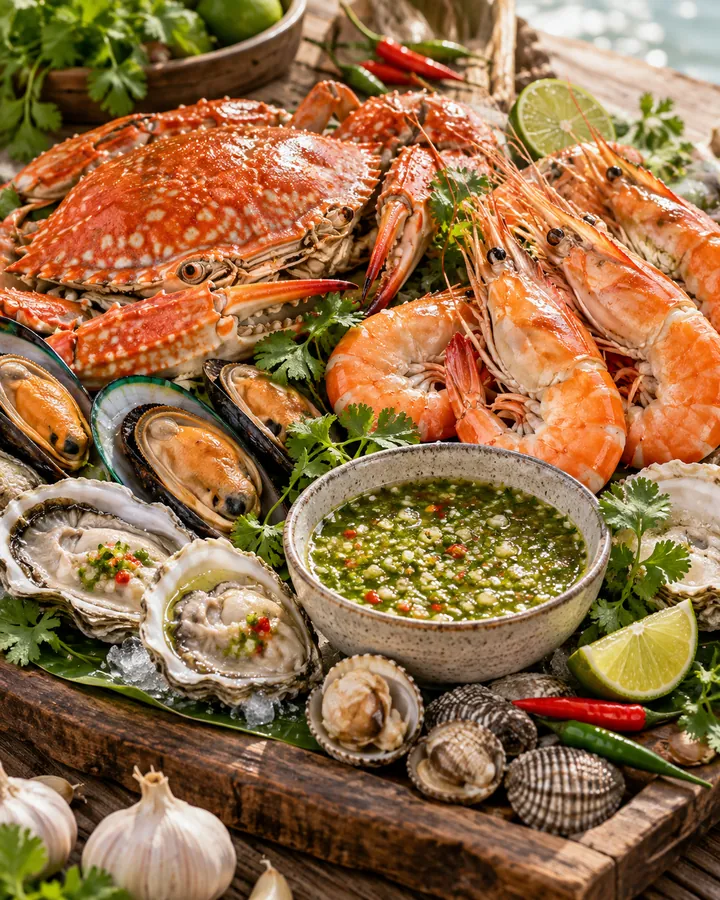
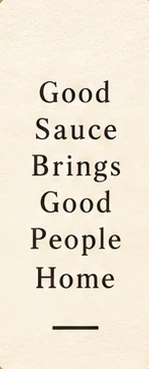
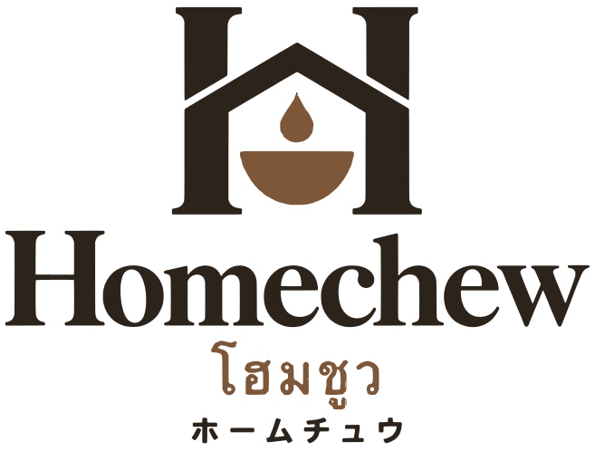

01 หาดใหญ่
น้ำจิ้มไก่หาดใหญ่
HAT YAI CHICKEN SAUCE
รสนำที่ครอบครัวมั่นใจ สำหรับมื้อทอด
- จับคู่กับ
- ไก่ทอด และของทอดที่ปรุงสุกแล้ว
- ที่มา
- รสที่ผูกพันกับบ้านเกิดของเรา และสูตรที่ครอบครัวตั้งใจเรียนรู้
- ขนาด · ราคา · การเก็บรักษา
- รอยืนยัน
ต้นแบบ · ภาพอาหารและฉลากเป็นภาพ concept · สั่งซื้อผ่าน LINE
Homechew · โฮมชูว
ปรุงอย่างพิถีพิถัน อร่อยง่ายแค่เท
น้ำจิ้ม 3 รสจากเรื่องราวของเรา พร้อมเป็นตัวช่วยในมื้อของคุณ
Crafted with care. Just pour and enjoy.
手間ひまかけたおいしさを、かけるだけ。
We craft. You pour.
ลอกแถบซีล แล้วหมุนฝา
เทลงถ้วยให้พอดีมื้อ
จิ้มกับมื้อที่ปรุงสุกพร้อมแล้ว



คำบรรยายรสเป็นทิศทางของแบรนด์ · ภาพอาหารเป็นภาพ concept
Different places · same table
สามรสจากสามความผูกพัน เลือกตามมื้อที่อยากกินวันนี้
01 หาดใหญ่
HAT YAI CHICKEN SAUCE
รสนำที่ครอบครัวมั่นใจ สำหรับมื้อทอด
02 มหาชัย
MAHACHAI SEAFOOD SAUCE
รสคู่มื้อซีฟู้ด จากรากครอบครัวคนทำซีฟู้ด
ชอบหอมผักชี? เติมผักชีสดในถ้วยได้ตามใจ — เป็นทางเลือก ไม่จำเป็น
ดูในชุดซอส 3 รส03 เชียงคาน
CHIANG KHAN JAEW SAUCE
รสสำหรับมื้อย่างและอบ จากความทรงจำการเดินทาง
Just pour and enjoy
มื้อทอด มื้อทะเล มื้อย่าง — มีซอสที่ใช่ มื้อธรรมดาก็ครึกครื้นขึ้นทันที


มหาชัย · มื้อทะเลภาพอาหารเป็นภาพ concept จาก AI เพื่อแสดงการจับคู่ ไม่ใช่ภาพลูกค้าหรือรีวิว
Crafted with care
เราใส่ใจเลือก เตรียม และปรุง เพื่อให้ตอนถึงมือคุณ ความอร่อยไม่ต้องยุ่งยาก
หาดใหญ่ มหาชัย เชียงคาน — สามที่ สามความผูกพัน อยู่บนขวด

ลอกซีล หมุนฝา แล้วเทได้เลย
ไม่ต้องปรุงเพิ่ม ไม่ต้องตำเอง มื้อเดิมอร่อยขึ้นทันที
ปรุงอย่างพิถีพิถัน อร่อยง่ายแค่เท
เมนูง่าย ๆ และไอเดียเติมอีกนิด โดยไม่จำเป็นต้องทำทุกครั้ง
น้ำจิ้มซีฟู้ดมหาชัย: หั่นผักชีสดใส่ในถ้วยก่อนเสิร์ฟ ถ้าชอบกลิ่นหอม — ทางเลือกเท่านั้น
สูตรอาหารกำลังทดสอบในครัวของเรา จะเปิดให้ทุกคนดูได้เมื่อพร้อม
ชุดซอสคู่บ้าน หาดใหญ่ · มหาชัย · เชียงคาน
Homechew ชุดซอสคู่บ้าน 3 รส
3 รสสำหรับมื้อทอด มื้อลวก และมื้อย่าง เราปรุงให้พร้อม คุณแค่เลือกมื้อที่อยากกิน
สั่งซื้อผ่าน LINE
แอดไลน์เพื่อสั่งซื้อและถามรอบผลิต ราคา ขนาด และการจัดส่ง — หน้านี้ไม่รับชำระเงิน ไม่ต้องสมัครสมาชิก
แอดไลน์เพื่อสั่งซื้อAdd LINE to order

ขอบคุณที่ให้ Homechew มีที่บนโต๊ะของคุณ
แอดไลน์เพื่อสั่งซื้อคอลเลกชันรสจากการเดินทาง · อนาคต ยังไม่เปิด